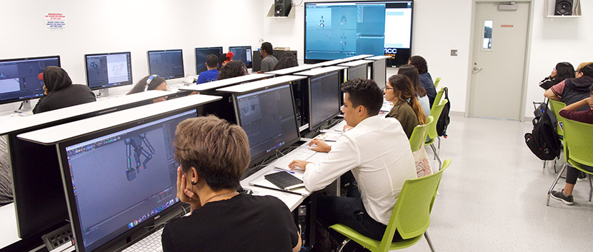
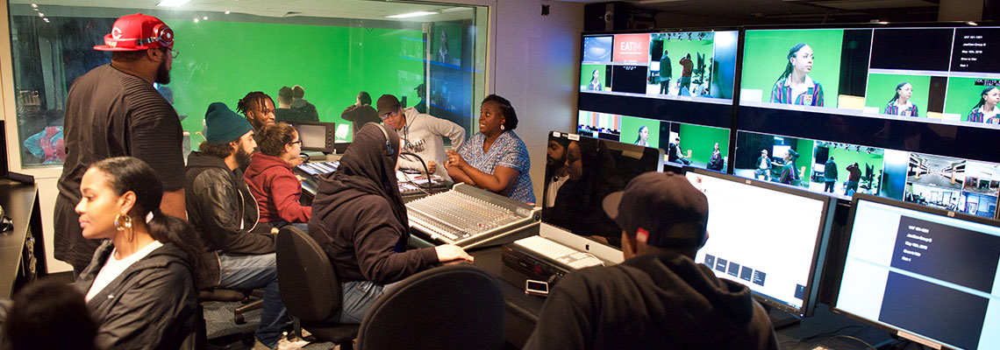
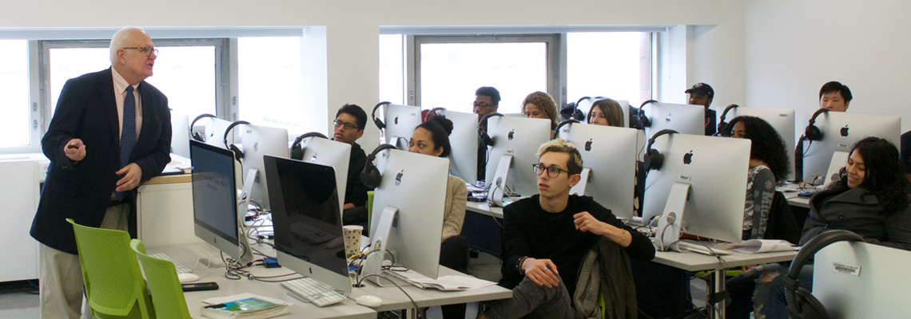

Borough of Manhattan Community College
Program: Animation & Motion Graphics
Degree: Associate of Science
The Animation and Motion Graphics program provides students with the fundamentals of two- and three-dimensional (2D and 3D) animation, motion graphics, and special effects for advertising campaigns, video games, movies, and television.
View Program

Kingsborough Community College
Program: Animation
Degree: Associate of Science
The Animation concentration is part of the Graphic Design and Illustration major. Students learn traditional, hand-drawn animation in a digital environment, as well as storyboarding and 3D animation.
View Program
Hostos Community College
Program: Digital Design & Animation
Degree: Associate of Science
Through lectures and studio-based classes the Digital Design and Animation Program provides students with a strong foundation for future occupations in motion graphics, animation, graphic design and/or web design.
View Program

Borough of Manhattan Community College
Program: Multimedia Programming and Design
Degree: Associate of Science
The Multimedia Programming and Design Program prepares students for careers in a variety of multimedia industries, companies and institutions that develop, produce or market multimedia products, programs or services.
View Program
Bronx Community College
Program: Digital Design
Degree: Associate of Applied Science
This program prepares students for careers in the visual communication industry in positions such as graphic design, web design, computer animation, 3D graphic visualization, motion graphics design and interactive multimedia design.
View Program
Hostos Community College
Program: Game Design
Degree: Associate of Science
The Associate degree in Game Design will provide students with a strong foundation for future occupations in the entertainment software industry. It will provide students with additional career opportunities in the field of entertainment software publishing.
View Program

Kingsborough Community College
Program: Game Design & Illustration
Degree: Associate of Science
The Art Department at Kingsborough Community College is dedicated to providing a comprehensive program of study in the visual arts, designed to prepare students of diverse life experience for either continued baccalaureate study or immediate entry into a range of visual art professions.
View Program
Kingsborough Community College
Program: UX Design
Degree: Associate of Science
The Art Department at Kingsborough Community College is dedicated to providing a comprehensive program of study in the visual arts, designed to prepare students of diverse life experience for either continued baccalaureate study or immediate entry into a range of visual art professions.
View Program

LaGuardia Community College
Program: New Media technology
Degree: Associate of Applied Science
"The New Media Technology major offers students the opportunity to work and experiment with some of the exciting technologies available today.
Students develop a broad understanding of multimedia and Internet technologies in order to develop expertise in creating digital content."
View Program
Queensborough Community College
Program: Digital Art and Design
Degree: Associate of Science
The A.S. degree program in Digital Art and Design prepares students to enter the greatly expanding field of new media. In addition to four basic courses that provide a solid background in art, students take five courses in digital art and design, which develop computer skills for fine and applied arts.
View Program

New York City College Of Technology
Program: Communication Design
Degree: Associate of Applied Science
The AAS degree program in Communication Design provides students with a solid foundation in the theory and practices of the Communication Design profession and a grounding in general education. Students explore visual expression through a range of courses in drawing, design and web design.
View Program